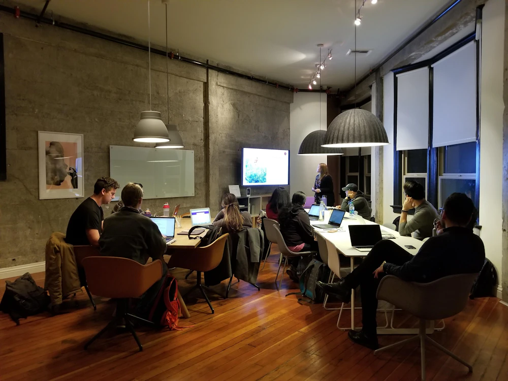
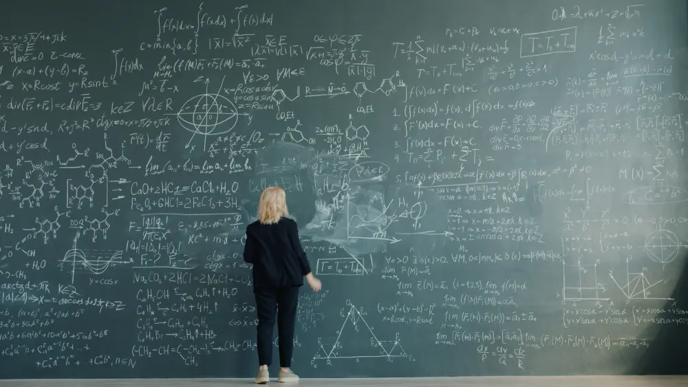

Mentor the teams worth backing.
BQ’s mentors test demand, cost and the business case with each team. Builder mentors give one team weekly, hands-on support. Senior mentors bring two or three sessions in their own domain.

Two kinds of mentor
What you give, and what you get.
-
Young professionals
Builder mentors
Weekly, hands-on support for one team through the mentored cohort. In return: hands-on leadership experience, visibility through BQ’s channels and access to senior mentors and founders.
-
Founders, leaders and seasoned builders
Senior mentors
Two or three sessions in your own domain, and judging at the finale. In return: a first look at builders with opt-in hiring, the option to invest or advise as teams incorporate, a peer network of founders and leaders, a route to explore your own problems and an early view of what new builders make.

How mentors join
From a networking event to a role in a cycle.
Curated networking events build the mentor network, and each role in a cycle grows out of one.
- A curated eventFounders, leaders and builders meet the BQ team and each other.
- An opt-inWould you mentor, judge or bring a problem? You choose.
- One first askOne specific ask, with a date.
- A role in a cycleBuilder mentor, senior mentor or judge at the finale.
Small mentor roundtables between cycles keep people involved and bring in their peers.
Our promise
Your time, well spent.
- Every team is screenedBQ selects every team before a mentor meets it.
- Every ask is specificEach ask says what is needed, from whom and by when.
- Every ask is time-boundMentoring has a clear start and end inside one cycle.
Mentor a team.
Tell us what you build and where you could help. We will come back with one specific first ask.